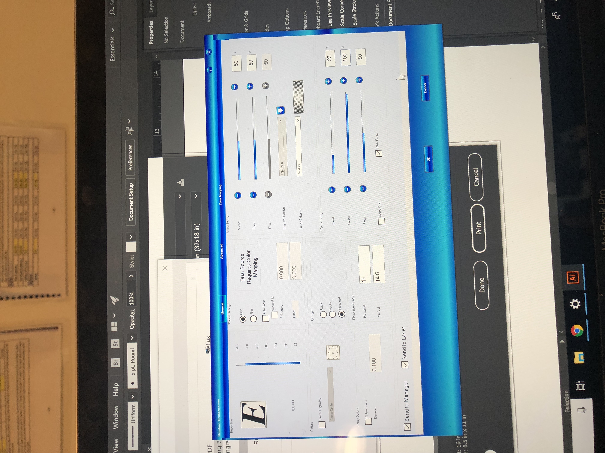
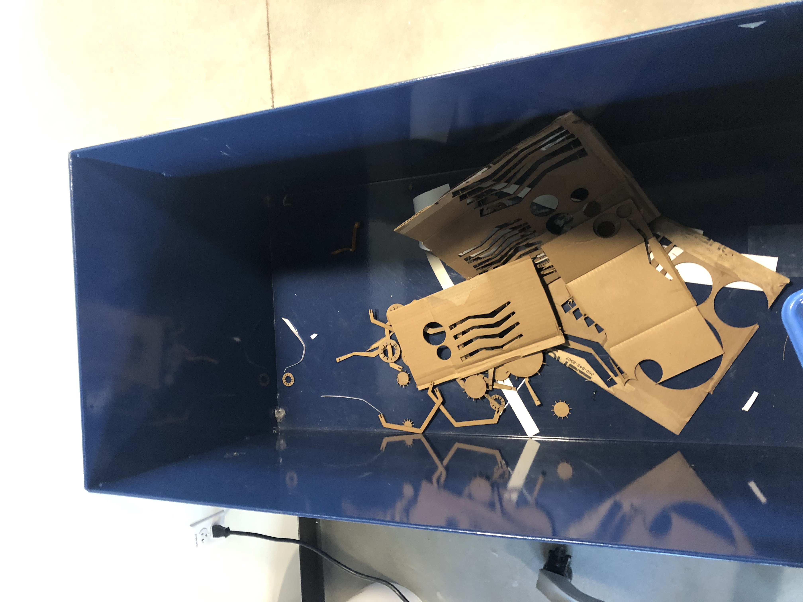

Julie's Assignment 2!

Here is all the documentation for assignment 2!
Phase 1: Planning
In planning to create a laser cut kit, I did some initial research on Pinterest and Google to find some inspiration.


Next, I began building out vector representations in Adobe Illustrator. After a few iterations of designs in Illustrator I was ready to go to The Mill.
See Vector file here
Phase 2: At the Mill
Once at the Mill I measured the cardboard with Calipers and printed out a test version, I quickly realized that I would need to rethink the size of the components as they were initially smaller than my finished product, however I was running into durability issues with the slots as they were so close together. I also re-measured my cardboard and made my slots a few cm larger, and this made all the difference.

Iteration 1

Iteration 2

Iteration 3
Phase 3: Printing
Next I started printing, and went through a few practice trials....


It was during these trials that I adjusted the size of the vectors and re-measured the size of my cardboard.
And Voila! A cardboard vase
Credits: Thanks to Tanya for help with the printing settings and feedback on my designs!